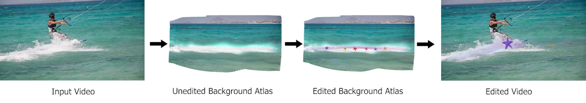
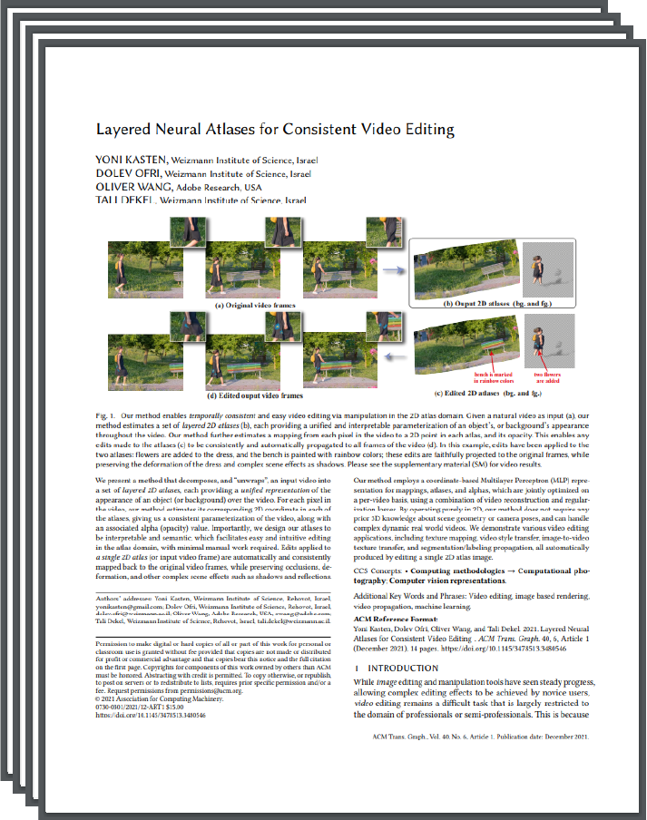

Layered Neural Atlases for Consistent Video Editing
| 1 Weizmann Institute of Science | 2 Adobe Research |
| | Paper | Video | Supplementary Material | Code | |
 |
|||
 |
|||
Abstract
hello
For each pixel in the video, our method estimates its corresponding 2D coordinate in each of the atlases, giving us a consistent parameterization of the video, along with an associated alpha (opacity) value. Importantly, we design our atlases to be interpretable and semantic, which facilitates easy and intuitive editing in the atlas domain, with minimal manual work required. Edits applied to a single 2D atlas (or input video frame) are automatically and consistently mapped back to the original video frames, while preserving occlusions, deformation, and other complex scene effects such as shadows and reflections. Our method employs a coordinate-based MLP representation for mappings, atlases, and alphas, which are jointly optimized on a per-video basis, using a combination of video reconstruction and regularization losses. By operating purely in 2D, our method does not require any prior 3D knowledge about scene geometry or camera poses, and can handle complex dynamic real world videos. We demonstrate various video editing applications, including texture mapping, video style transfer, image-to-video texture transfer, and segmentation/labeling propagation, all automatically produced by editing a single 2D atlas image.
Video Decomposition
Our model successfully manages to decompose the videos and produce foreground and background atlases which can be used later for editing. |
|||
 |
Editing examples
After decomposition, we edit the atlas and use the learned mapping to apply the edit on all the frames.|  | |||
 |
|||
 |
Paper
|  | Layered Neural Atlases for Consistent Video Editing |
Supplementary Material
 |
Code
|
[code] |
External Coverage